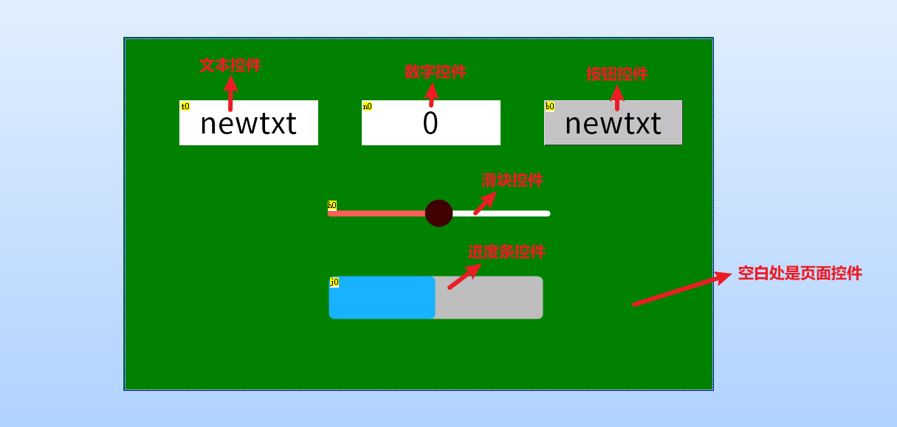
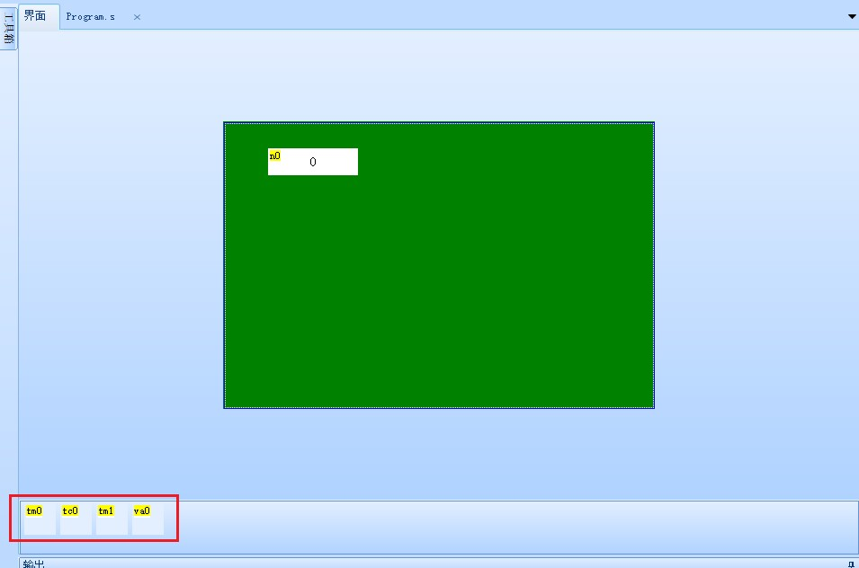
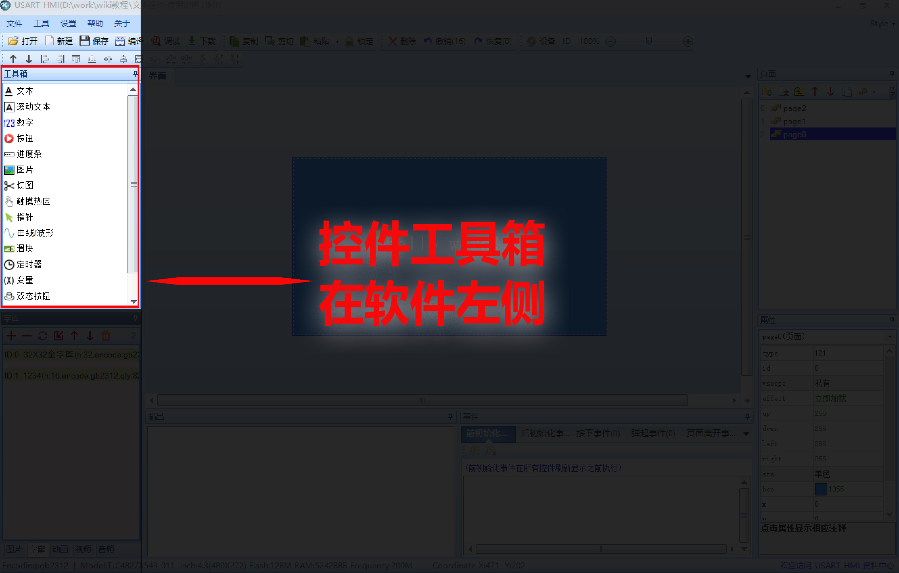
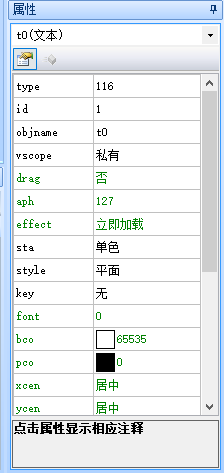
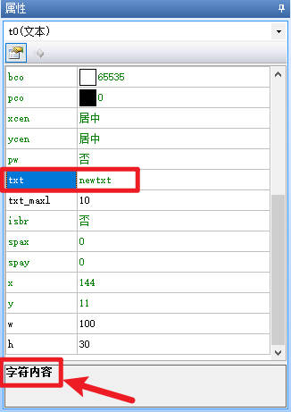
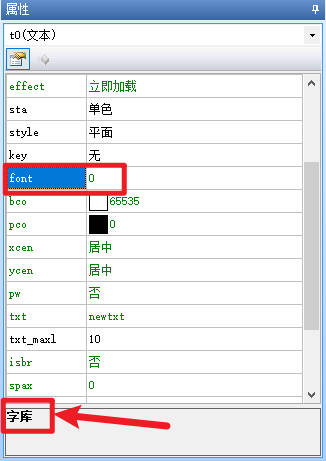
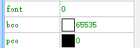
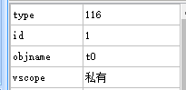
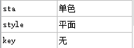
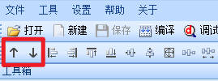

认识控件
提示
视频教程： 认识控件
控件是什么
控件是串口屏想实现相关功能的“功能组件”，需要串口屏显示什么内容就使用相对应的控件。
例如：
显示文本，用【文本控件】
显示图片，用【图片控件】
显示进度，用【进度条控件】
实现按键功能，用【按钮控件】
实现滑动功能，用【滑块控件】
要播放视频，用【视频控件】
••• •••
在串口屏上位机的界面编辑窗口中,一切你能看到的,都是控件

有些控件是看不见的，比如定时器，触摸捕捉等控件，位于底部的特殊控件栏

控件种类有多少
《USART HMI》，目前已有“30种”控件，具体是哪些控件请打开软件查看控件“工具箱”查阅（控件工具箱位置如下图所示），同时我们根据市场需求会持续增加新控件。

控件事件是什么
控件事件，指的是这个控件被操作时要执行的功能。
目前各种控件综合起来被操作的方式有以下几种类型：
1、触摸被按下：对应名称叫做【按下事件】
2、触摸被按下后弹起：对应名称叫做【弹起事件】
3、滑块控件被滑动：对应的名称叫做【滑动事件】
4、定时器定时运行：对应的名称叫做【定时事件】
5、动画播放完成：对应的名称叫做【播放完成事件】
6、视频播放完成：对应的名称叫做【播放完成事件】
控件属性解析
1、控件属性描述
控件属性是控件自己的一些设置项，上面提到想要什么功能就选择对应的控件。
比如想要显示文本，就用文本控件，但是选择文本控件后，显示什么内容？什么字体？字体什么颜色？文本背景什么颜色？字体间距多少等等这些信息怎么设置呢？
这就需要属性来定义了，这些信息都属于这个文本控件的属性，每个控件都有很多属性可以设置，用来定义他的显示风格。
通过对属性的简单编辑，便可将控件设置成您需要的效果；
选中任一控件,可以在右下角看到其属性栏

选中属性栏的任一属性，最底部会显示该属性的注释，例如 txt 属性，底部对应显示注释的为 字符内容 ，即文本控件显示的字符内容

例如 font 属性，底部对应显示注释的为 字库 ，即文本控件调用的字库

控件属性有2种颜色,分别为绿色和黑色
绿色属性:控件编辑时可设置+运行中可改变，例如字库，字体色，背景色等

黑色属性:控件编辑时可设置（运行中不可改变，例如objname：控件名称）或不可更改（例如type：控件类型）


提示
type属性不可设置,objname属性不可读取,id属性需要通过左上角置顶置底按钮才能进行更改
控件属性读写
n0.val=100 //将n0赋值为100
t0.txt="淘晶驰电子" //文本控件显示淘晶驰电子
prints t0.txt,0 //将t0的文本内容从串口发送出去。
更多示例请参考 赋值操作
控件属性详解
type属性
控件类型，可读，不可更改，不同类型的控件type属性不一样，相同类型的控件type属性一样
使用场景：
1、在键盘页面判断跳转过来的控件是什么类型的控件，不同的控件有不同的转换方法，详情请参考 键盘如何获取到原始控件的值
2、在触摸捕捉中判断按下去的控件是什么类型
id属性
控件id，可通过上位机左上角的上下箭头置顶或置底，不能通过指令进行修改
每个页面中最底层都有一个页面控件，其id固定为0，可以设置当前页面的背景图片，背景色等操作
除了页面控件，每个页面最多放250个控件，占据id 1-250 ，每个页面各个控件之间id号是唯一的，不会重复

可以理解为控件的图层，id大的控件会挡住id小的控件
使用场景：
通过名称组操作控件，请参考： 数组/名称组使用说明
objname属性
控件名称，可通过上位机进行修改，不可通过指令更改，不可读取
例如
t0.txt=n0.objname //错误写法，objname属性不允许读取
n0.objname="n1" //错误写法，objname属性不允许写入
vscope属性
内存占用:0-私有;1-全局;可通过上位机进行修改，可读取，不可通过指令更改
私有占用只能在当前页面被访问，全局占用可以在所有页面被访问
当设置为私有时，跳转页面后，该控件占用的内存会被释放
重新返回该页面后该控件会恢复到最初的设置，可通过上位机进行修改，不可通过指令更改
txt属性
字符内容，通常出现在需要显示文本字符的控件中，例如文本控件，按钮控件，滚动文本控件等，修改此属性，就可以修改控件上显示的内容，可以理解为c语言中的字符串
val属性
数值，通常出现在需要显示数值的控件中，例如数字控件，虚拟浮点数控件等，修改此属性，就可以修改控件上显示的内容吗，数值主要用于加减乘除等计算，可以理解为c语言中的有符号整形（signed int）
font属性
控件所调用的字库id号，通常出现在需要显示文本字符和数值的控件中，例如文本控件，按钮控件，数字控件，数据记录控件等。导入不同的字库后修改此属性可以让控件显示不同的字体和字高
控件属性-相关链接
哪些控件属性可以运行中修改，哪些不能运行中修改，绿色属性和黑色属性有什么区别？
控件属性-控件id对照表
控件类型 |
type值 |
文本 |
116 |
滚动文本 |
55 |
数字 |
54 |
虚拟浮点数 |
59 |
按钮 |
98 |
进度条 |
106 |
图片 |
112 |
切图 |
113 |
触摸热区 |
109 |
触摸捕捉 |
5 |
指针 |
122 |
曲线波形控件 |
0 |
滑块 |
1 |
定时器 |
51 |
变量 |
52 |
双态按钮 |
53 |
复选框 |
56 |
单选框 |
57 |
二维码 |
58 |
状态开关 |
67 |
下拉框 |
61 |
选择文本 |
68 |
滑动文本 |
62 |
数据记录 |
66 |
文件浏览器 |
65 |
文件流 |
63 |
动画 |
2 |
视频 |
3 |
音频 |
4 |
外部图片 |
60 |
页面 |
121 |